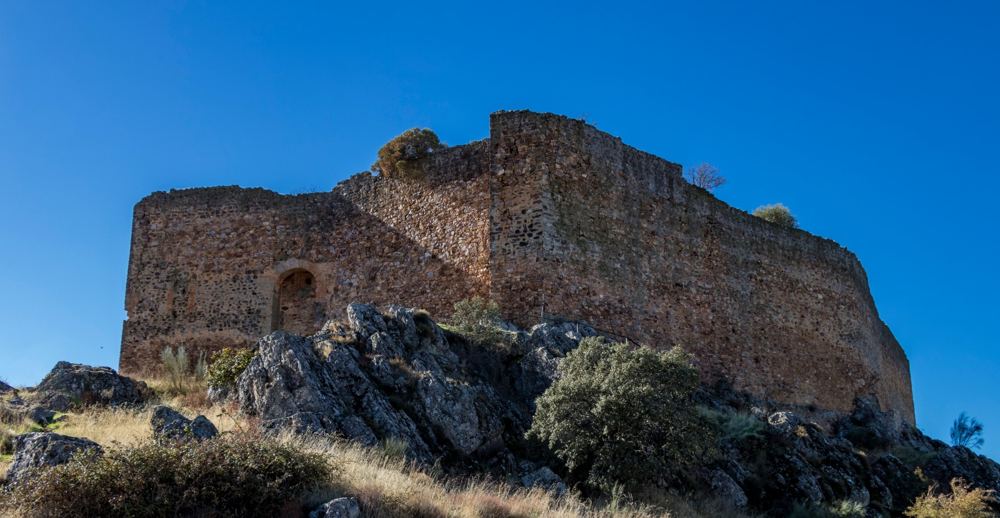
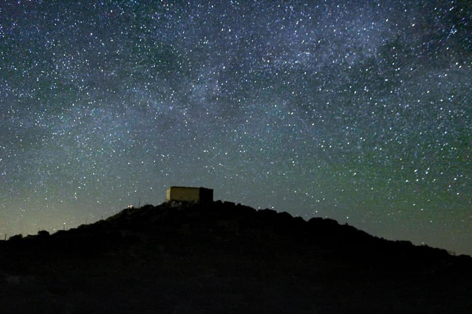
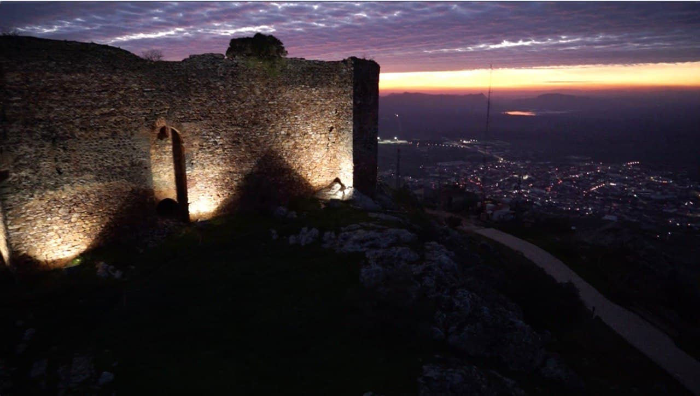

Castillo de Herrera del Duque
Imponente fortaleza medieval que domina el horizonte de La Siberia.
El Castillo de Herrera del Duque es uno de los elementos patrimoniales más representativos de la Reserva de la Biosfera de La Siberia, situado en la localidad de Herrera del Duque, en la provincia de Badajoz. Elevado sobre un cerro que domina el entorno, este castillo ha sido durante siglos un símbolo de poder, control territorial y defensa, además de convertirse hoy en un mirador privilegiado sobre el paisaje de la Siberia extremeña.
Su emplazamiento no es casual. Desde este punto se controlaban antiguamente las rutas naturales y los pasos entre territorios, lo que lo convertía en una fortaleza clave dentro del sistema defensivo medieval.
El origen del castillo se remonta a época medieval, con posibles antecedentes islámicos que fueron posteriormente transformados tras la conquista cristiana. A lo largo de los siglos, la fortaleza fue ampliada y reforzada, especialmente durante la Baja Edad Media, adaptándose a las necesidades militares de cada momento. Además de su función defensiva, el castillo también tuvo un papel simbólico, representando el poder señorial sobre el territorio y la población.
El Castillo de Herrera del Duque cumplía una doble función: militar, como fortaleza defensiva para vigilar y proteger el territorio, y simbólica, como representación del poder de la nobleza y control sobre la comarca. Su posición elevada y su estructura permitían anticipar ataques, controlar movimientos y servir como punto de refugio en caso de conflicto.
Aunque el paso del tiempo ha transformado su aspecto, el castillo conserva elementos clave de la arquitectura militar como sus murallas robustas, la torre del homenaje, el sistema de acceso elevado o su ubicación estratégica en altura, que actuaba como defensa natural. Estos elementos reflejan la importancia del castillo dentro del sistema defensivo de la zona.
Actualmente, el castillo se conserva como un importante recurso patrimonial y turístico. Aunque no mantiene todas sus estructuras originales intactas, sigue siendo un punto clave para comprender la historia del territorio. Su valor no es solo histórico, sino también paisajístico: desde su entorno se obtienen algunas de las mejores vistas del municipio y de la Reserva de la Biosfera de La Siberia, integrándose perfectamente en el entorno natural que lo rodea.
Galería de fotos


